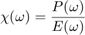
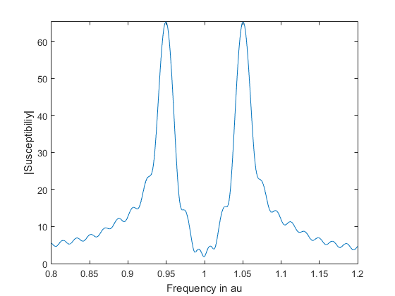

getSusceptibility
returns the susceptibility of choosen subsystem.
Contents
Syntax
- getSusceptibility(name)
- getSusceptibility(name,eps)
Description
getSusceptibility(name,eps) returns the Susceptibility of the subsystem name. To calculate this value the polarisation for this subsystem as well as all external fields acting on the subystem are fourier transformed and the susceptibility calculated

Example: A qbit coupled to a cavity.
s = System; s.addEntity(Nlevel(1),'qbit'); s.addEntity(Qoscillator(3,1),'cavity'); s.addCoupling('qbit','cavity',0.05); s.addDissipation('qbit',40); s.addExternalField(Gausspulse(0.04,50,15,1),'qbit'); %amplitude, delay time, pulse width, resonance frequency s.setTimestep(0.1); s.simulate(); s.setdf(0.0001); %set the frequency interval (s.f vector) plot(2*pi*s.f, abs(s.getSusceptibility('qbit'))); axis([0.8 1.2 -inf inf]) %zoom in on the relevant part xlabel('Frequency in au'); ylabel('|Susceptibiliy|');
Two peaks are visible which correspond to the slightly shifted resonance frequencies of qbit and cavity. High frequency artifacts occur due to the cutoff of the signal before the signal has completely decayed.